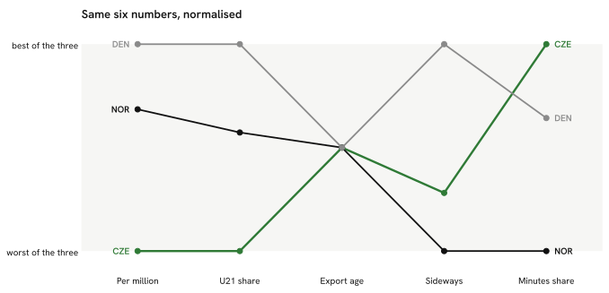

Summary · Question 10 of 14
Czechia, Norway and Denmark on seven pathway measures, 2025/26
On the same definitions, Norway gives its under-21 nationals 12 % of home-league minutes against 6 % in Czechia, and 65 % of its tournament squad played in the 9 top-ranked leagues against 35 %.

The seven numbers, unscaled
| Metric | CZE | NOR | DEN |
|---|---|---|---|
| Players per million | 2.39 | 9.37 | 12.58 |
| U21 share of domestic minutes | 6.4 % | 11.5 % | 15.3 % |
| Age at first top-9 season (recent entrants) | 22 | 22 | 22 |
| Sideways moves | 19 % | 22 % | 10 % |
| Exports' club-minutes share | 50 % | 37 % | 46 % |
| National-team squad in the top-9 leagues | 35 % | 65 % | — |
| Big-5 players now | 10 | 25 | 38 |
— : no value; for the squad row, the country did not play at the tournament.
How we know
As an analytics question In numbers: Norway and Denmark against Czechia on the same seven pathway definitions, same seasons.
What we did We compared the home nation with the two comparison countries on seven numbers, each one defined and measured in exactly the same way for all three.
Sources Same definitions, same seasons; a comparison, not a causal claim. The chart rescales the first six measures 0–1 across the three countries, direction chosen so 1.0 is always the more open pathway (more players per million, more U21 minutes, an earlier age at the first top-9 season, fewer sideways moves, a bigger minutes share abroad, more of the squad in the top-9); the table keeps the raw numbers.
What this means
The table gives the seven measures side by side, measured the same way for the three countries, so a difference in the table is a difference in the data. With three countries no measure can be tied statistically to the per-head count, and the rescaled chart exaggerates small differences.
What this does not show
Why the three countries differ, how the measures move over time, and any country outside the three.
Data snapshot: FBref tables fetched 14 September 2026, snapshot commit 7cbfe45 · code: src/render.py (_build_peer_compare), src/pathways.py · status: exploratory, not pre-registered · all limitations